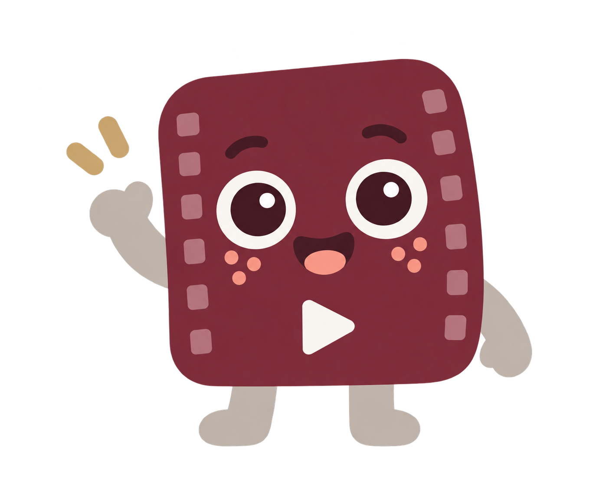

Let the canvas breathe
Use mostly paper, white and grey. Maroon anchors the identity; coral, rose and oat add small moments of personality.
70%20%10%
A playful creator tool with a matte maroon heart, a calm grey canvas and one expressive little filmstrip.
This is an interactive brand reference. Controls demonstrate interface behaviour; no videos are processed.
Explore the states
#702F42#C9C5C1#F3F1EE#E7ADA0#E9D6D2#D5C28FUse mostly paper, white and grey. Maroon anchors the identity; coral, rose and oat add small moments of personality.
Ink on light surfaces. White on maroon. Essential control boundaries use a dark grey. Selection always has a label, icon or outline as well as colour.
Exact values and state colours live in tokens.json. Raster illustration tones can vary slightly.
Keep the vector logo as supplied. Minimum width 120 px, or 24 px for the standalone mark. Clear space: 20% of the mark width.
The new mascot has a maroon filmstrip body, grey limbs, big friendly eyes, coral cheeks and a play badge. Use rounded filled shapes and restrained details.
No heavy outlines, folded paper corner, glossy effects or unrelated characters.
Welcome: onboarding and import.
Four separate transparent PNG assets are included in assets/mascot, named by action. Errors and empty results use text until suitable poses are created.
Aa
16 px body. 14 px labels. 32 px headings. Clear hierarchy without remote font dependencies.
12 px controls.
24 px cards.
48 px primary controls.
4 px spacing base.
“Find clips.”
“Review your selection.”
“Ready to export.”
Never guarantee virality. Explain the real next step.
Hover responds to a pointer. Pressed is the moment a control is held down. Selected is a persistent choice. Keyboard focus remains visible alongside those states.
Hover, pressed and focus examples are pinned for inspection. The other controls also respond to real pointer and keyboard input.
Hover and press each variant to inspect its treatment.
Do not use low opacity as the only disabled treatment.
Try typing, hovering and pressing Tab.
Selectable and focusable, but not editable.
The feature is currently unavailable.
! End time must be within this 120 second source.
✓ This example title is valid.
Native keyboard navigation, selected and disabled options.
Starts in a mixed state. Click to select or clear.
Example clip card. Toggle selection to inspect the persistent state.
No clips selected in this example.
Horizontal position: . Use arrow keys for precise adjustment.
This demo validates a filename extension locally; it never uploads or processes the file. Production must validate the actual media server-side or in the local engine.
No file chosen.
These are visual examples. Only real, newly occurring updates belong in live regions.
Unknown duration: Preparing video…
Use real progress when known. Otherwise show the stage without an invented percentage. Skeletons are decorative.
Open the remove example above for a keyboard-accessible dialog. Escape closes it and focus returns to the opener.
Start with a video you want to turn into shorts.
State preview only. Percentages and counts are illustrative.
| State | Pose | Primary recovery / next action |
|---|---|---|
| Ready to start | welcome | Add video |
| Validating file | None | Cancel |
| Uploading | None | Cancel |
| Queued | None | Remove from queue |
| Analyzing | thinking | Cancel |
| Results ready | clipping | Review clips |
| No candidates | None | Adjust range |
| Editing a clip | None | Save changes |
| Unsaved changes | None | Save changes |
| Exporting | clipping | Cancel |
| Partial export | None | Retry failed clips |
| Complete | celebration | Open exports |
| Cancelled | None | Start again |
| Processing error | None | Retry |
| AI service offline | None | Retry connection |
| API key required | None | Open settings |
| Rate limited | None | Retry when available |
| Output storage full | None | Choose output folder |
Offline means an external service is unavailable. Local editing and export can stay usable when the application architecture permits it.
Use native controls and real job state. Connect actions to working handlers. Never celebrate failure or simulate production progress. Keep decorative artwork separate from accessible status messages.
The guide defines a light theme. Dark surfaces have focus guidance; a full dark application theme is not included.